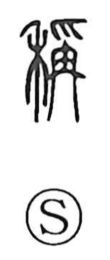

Explanation
Shirakawa sees 笑 as a pictograph of a miko—a female shaman—raising both hands, twisting her body, and dancing in ecstasy. It captures the posture used to appeal to and delight the gods, and from this ritual performance the character came to mean to laugh and to smile. The lower element is 夭 (yō), depicting a dancer with head inclined and body sinuously bent, while the upper part was later standardized as the bamboo crown 竹. He contrasts it with 若, which likewise portrays a shaman waving her hands to seek divine revelation in combination with a covenant vessel; in 若 those waving hands settled into the grass radical 艹, whereas in 笑 they became the bamboo crown. Early on the word was also written with the mouth radical as 咲, a form that later specialized to mean “to bloom.”